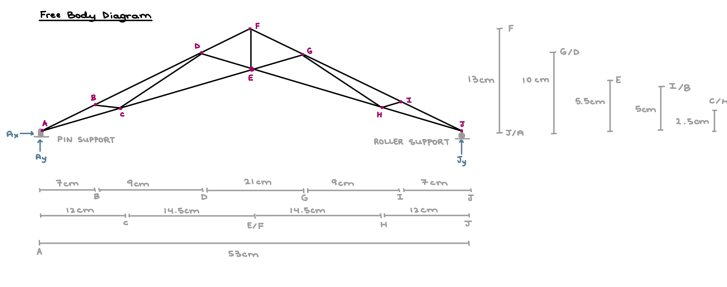
Objective
The goal of the project is to build a (statically determinate) truss and find the support reactions and members' internal loads under various loading conditions.
- Part 1: Design a truss and find support reactions (theoretical calculations)
- Part 2: Build the truss and find support reactions
- Part 3: Calculate the members' internal loads (theoretical calculations)
- Part 4: Check the answers with an online calculator and MATLAB analysis
Results
The truss forces computed by the online calculator are identical to the corresponding internal loads calculated in Part 3 for each member. Additionally, the reaction forces also match the calculated values from Part 1. MATLAB values likewise correspond to the ones found with manual calculation — validating the full theoretical analysis.
Gallery
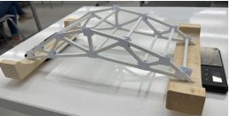

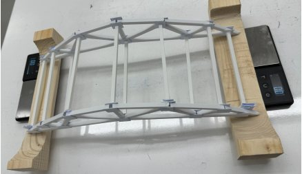
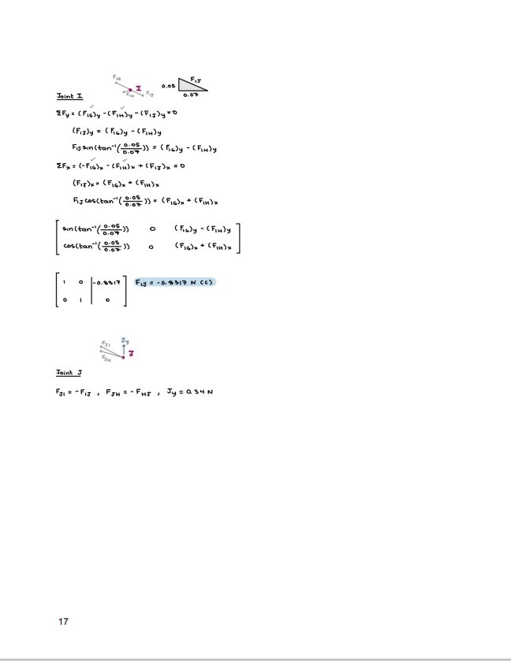
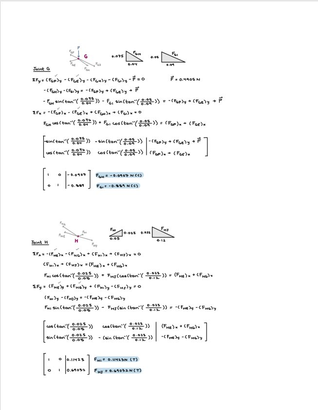
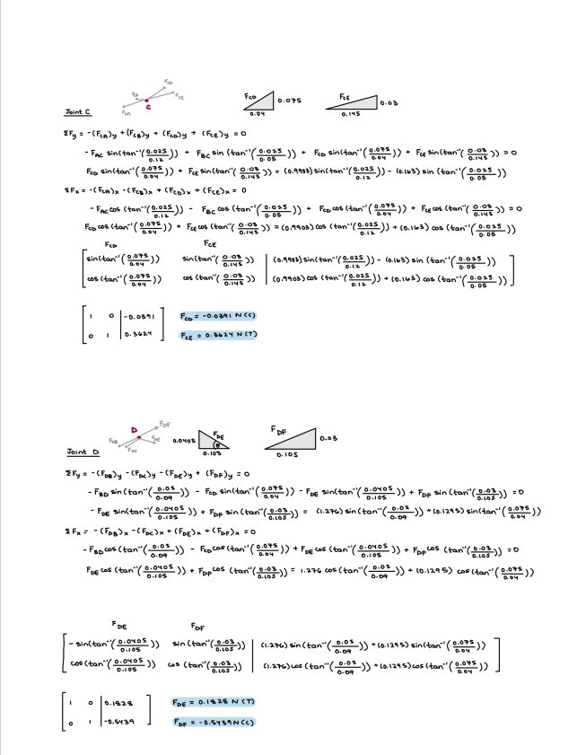
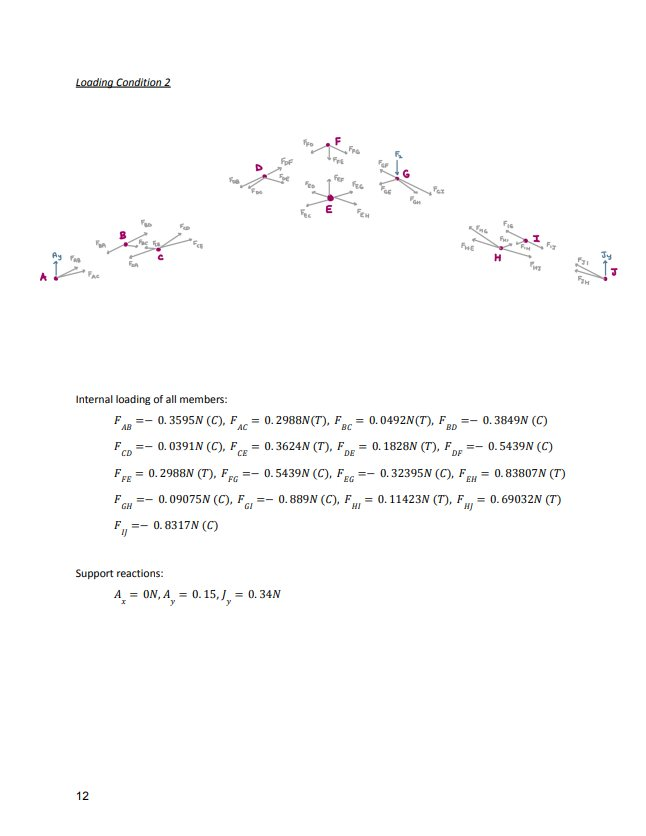
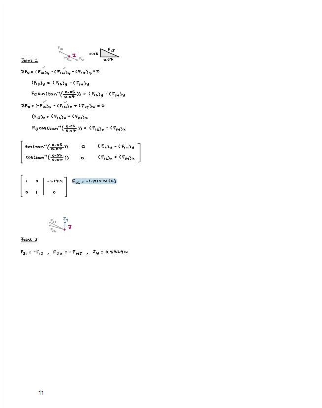
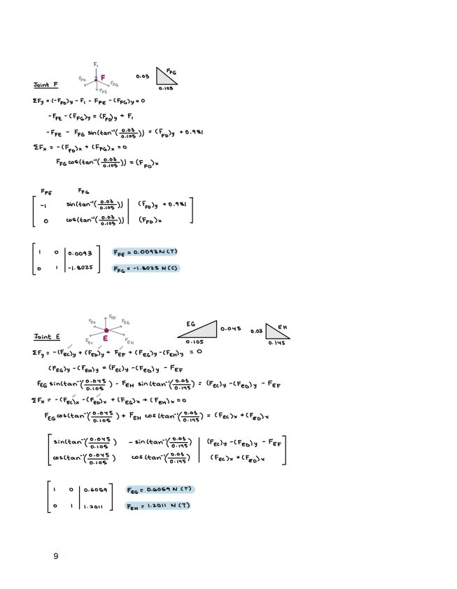
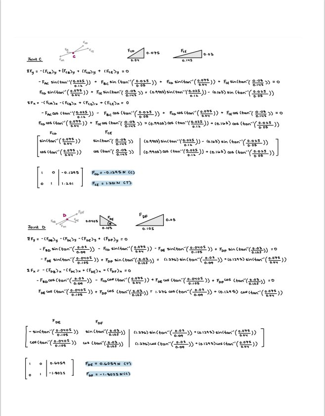
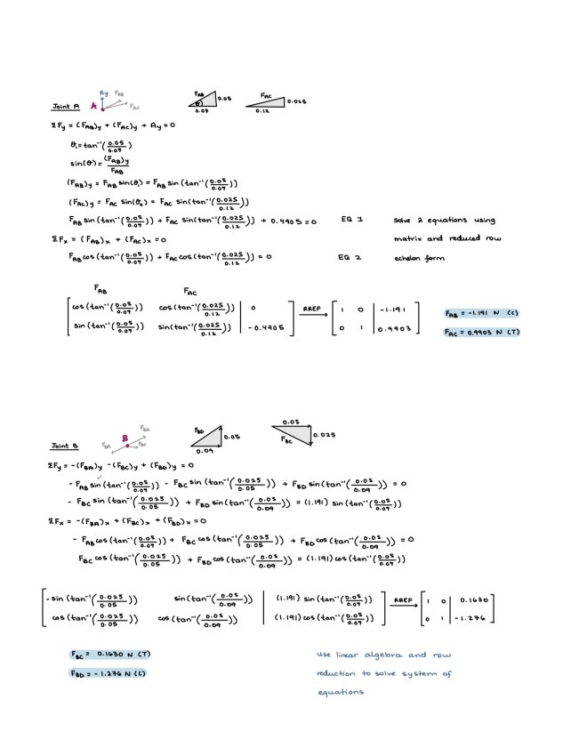
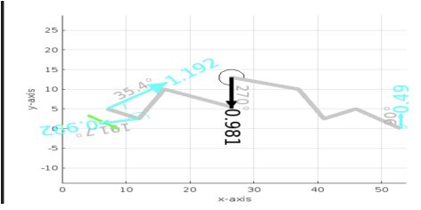
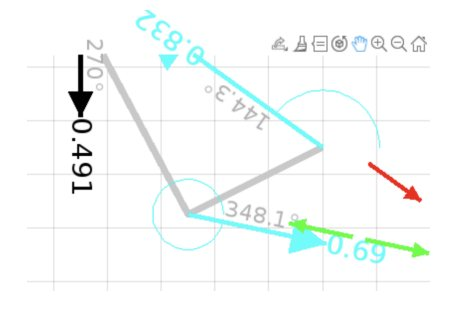
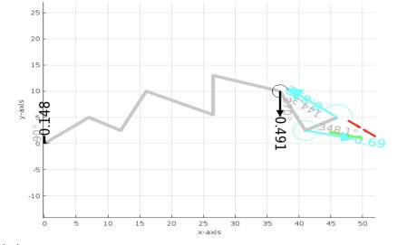
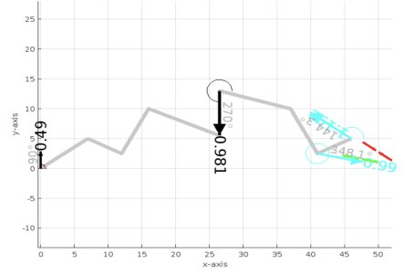
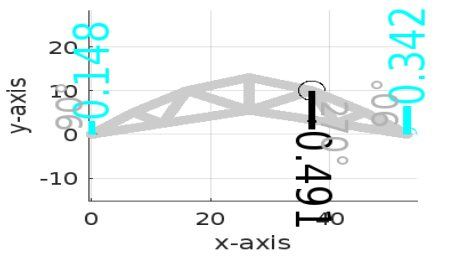